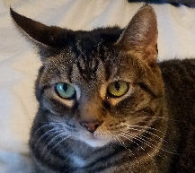
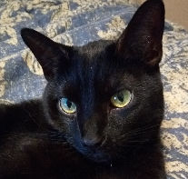

Information About Oreo's Friends
Oscar
He was our first cat, we bought him from a pet store. He loves to have his ears scratched and be pet. Sometimes he gets "pushy" if he does not think that you are paying enough attention to him and he will nudge you until you stop everything that you are doing and pet him. He is very sweet when he wants to be. He does not like to be picked up. And he does not like to be cold. He is very spoiled. His nickname is Mr. Budgie.
Orange Juice

She was named this when she was adopted because of her orange hair and eye color. She had a rough life before we brought her home. She was scared of people and would not let anyone pet her for very long without trying to bite them or running to hide. (She did not bite hard, she really just snipped at us little bit so we would know that she was overwhelmed. Now, she loves to be pet and follows us around the house for attention.
Orson
Orson is the name that this sweet guy had when my daughter adopted him from the animal shelter. He is very curious and likes to cuddle. He has a lot of energy and likes to play so much that he drives Oscar and Orange Juice NUTS! He is not mean to them, just overly friendly! Not all of us wanted a new cat when he came into our lives but he has stolen our hearts. Orson is our "therapy kitty" too. He always seems to know when you are not feeling well or are upset and he comes to give you some love.